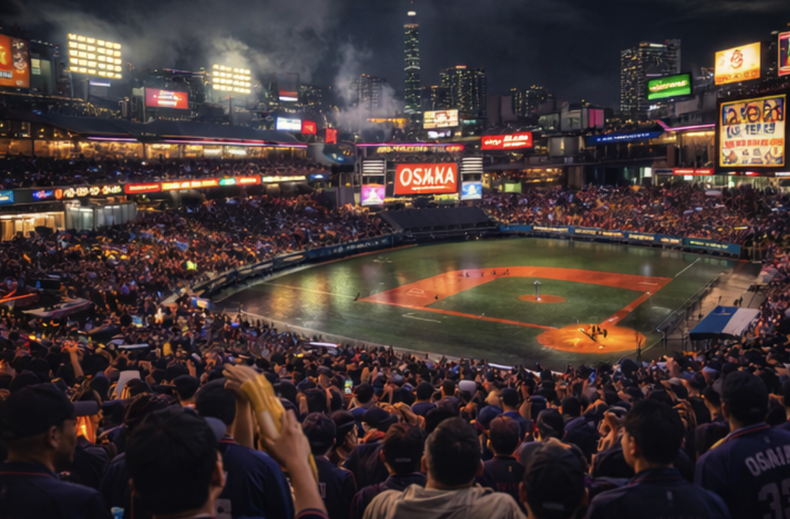
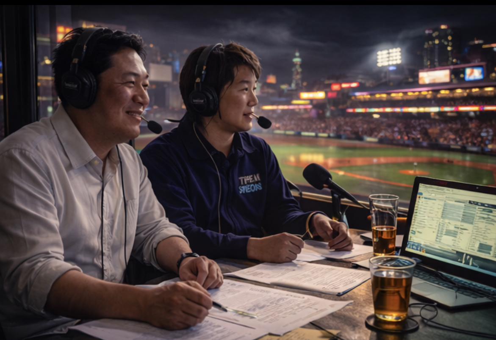
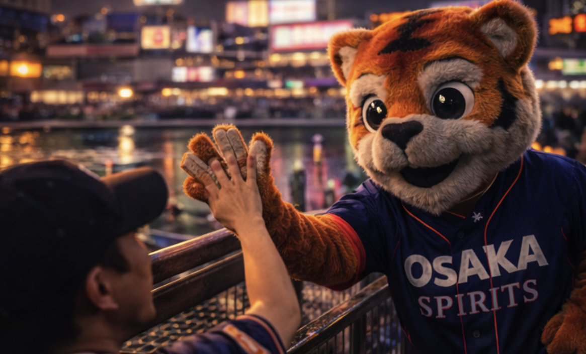
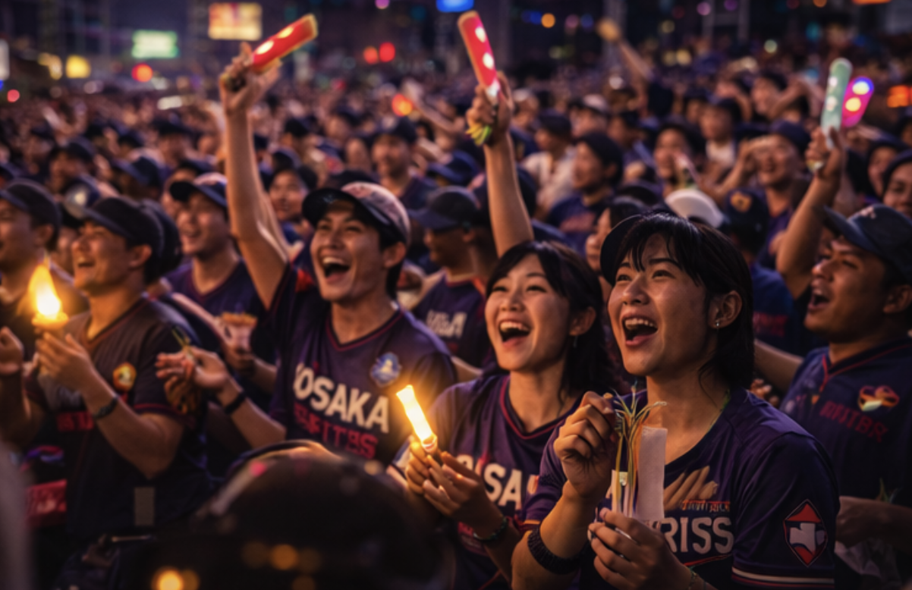

The Spirits don’t play quiet baseball. Osaka turns every inning into a street festival—rhythm, banter, snacks, heckling, laughter. The team feeds off noise and momentum, pressing at the margins until a defense breaks. The vibe is night-market energy: warm, crowded, fast, and strangely organized.

Dōtonbori Grounds. A compact park stitched into the canal district. Neon signage reflects off damp concrete. Food stalls ring the concourse. The air smells like grilled skewers and citrus soda. Night games feel like the city is leaning in.

Voices of the Spirits. Quick, playful, and precise. They call the game like they’re in the stands—laughing, correcting each other, narrating the crowd as much as the diamond. The booth picks up the city: drums, chants, and the occasional vendor call.

A human-worn mascot built for chaos—big head, visible seams, scuffed fabric, slightly sweaty. Spir lives in the aisles: high-fives, selfies, mock-arguments with ushers, and constant motion.

Families, students, office workers, tourists—packed shoulder-to-shoulder. Fans clap in rhythm, wave towels, hold glowing sticks, and eat like it’s halftime at a festival. Loud, friendly, relentless.
| 2B | Riku “Ticker” Morita |
| C | Daichi Kondo |
| P | Jun “Sidecar” Nishida |